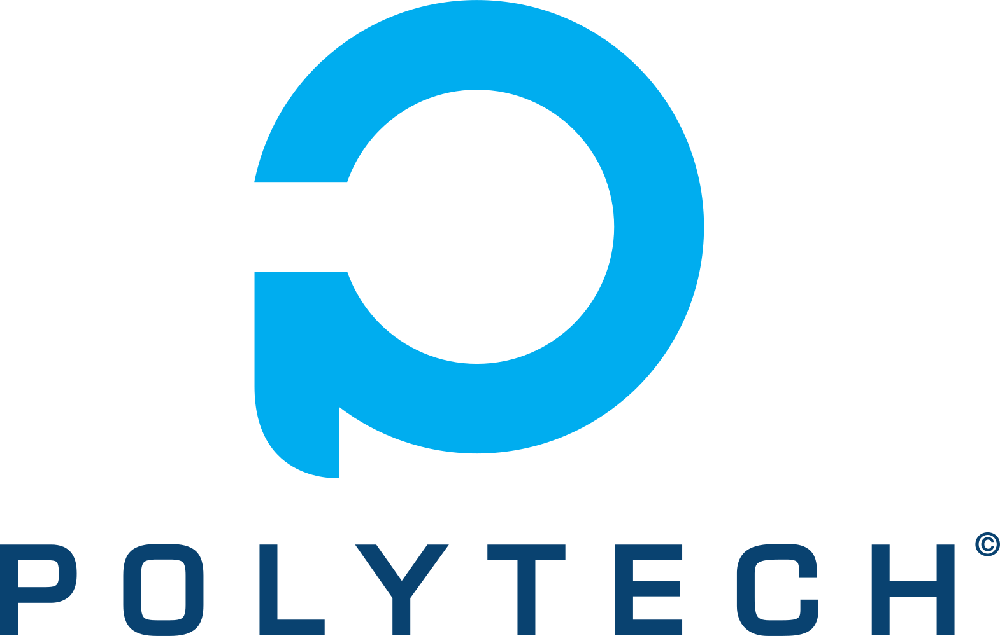

Présentation
Polytech Dijon est une école d’ingénieurs publique de l’Université de Bourgogne créée en 1991. Les frais d’inscription s’élèvent à 601 euros (gratuits pour les boursiers). Elle bénéficie de toutes les infrastructures de l’Université de Bourgogne : installations sportives, bibliothèques, résidences universitaires, bibliothèques…
Actus
Polytech Dijon

C’est officiel, l’ESIREM devient l’École Polytechnique Universitaire de Bourgogne !
Livraison

Les sweat et les T-Shirt Polytech Dijon sont arrivés. Venez récupérer votre commande.
Kafet

Suite à une formation sur l’hygiène en restauration, la Kafet va être en mesure de vous proposer de nouvelles prestations culinaires. On vous en dit plus très bientôt.